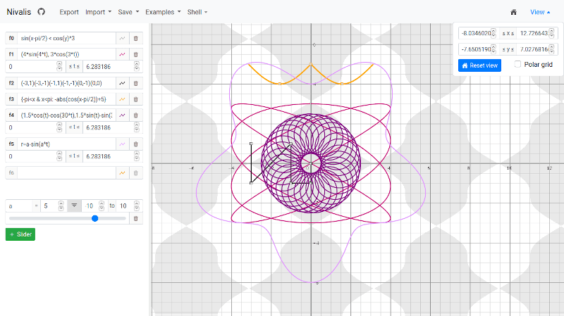
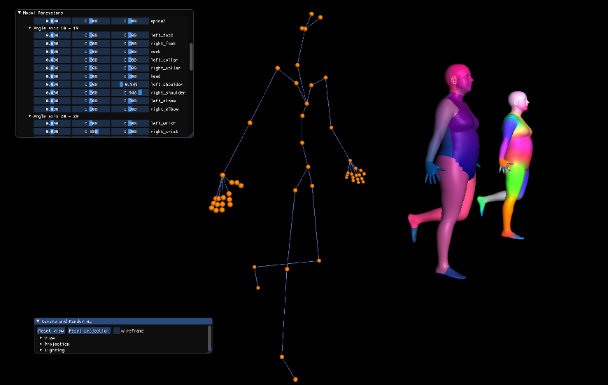
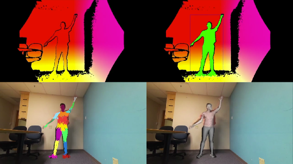
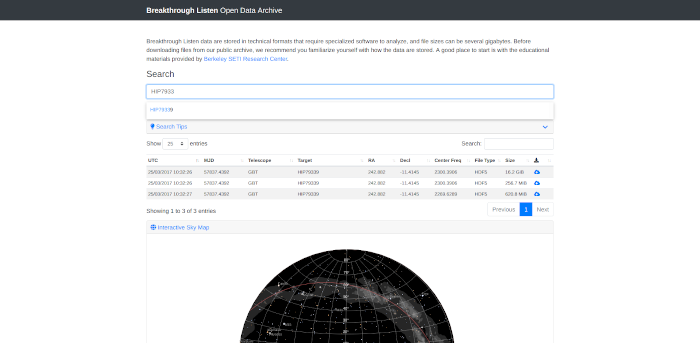
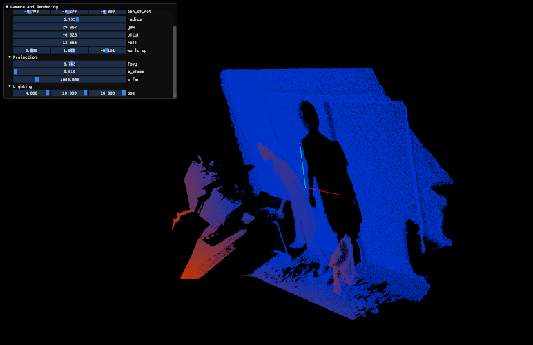

Personal Projects
-
Nivalis plotter
(funcplot.com):
an open-source graphing calculator written in C++, with both desktop and online (using emscripten/wasm) versions.
It is not feature-complete compared to Desmos and Geogebra, but it is pretty good at plotting/critical point finding
Documentation/project page: see github

This is the successor of the Cantus project which I made in high school.
-
SMPL-X ++: SMPL-X, SMPL+H, SMPL implementation in C++ with built-in mesh visualizer.
Project page

-
Avatar (demo video):
Fitting SMPL (human body) model to a point cloud in real time on a CPU.

-
Boolean Function Complexity Measures (link): an editable and interactive online Boolean function complexity measure table
-
I built the Berkeley SETI Open Data Archive, a modern web app for the public to access SETI data.

Miscellaneous
-
Quaternion SRUKF is a modern C++ implementation of Square Root Unscented Kalman Filter with support for quaternion vectors.
-
meshview: Simple OpenGL mesh and point cloud viewer in C++ for rapid prototyping.
Project page

-
Bacon2, a Python C++ extension, is a system for running the Hog Contest in CS 61A (the code is now private to prevent students from taking advantage of it). This is the successor to Bacon, which I created previously for the same purpose.
-
Transmitting text using sound: this was my final project in EE 126. I was able to get it to achieve a 200 bits-per-minute transmission rate with good robustness using frequeuency modulation, Reed-Solomon and Huffman coding, which was one of the best in the class.
-
watplot is a fast interactive visualization system for SETI: Breakthrough Listen radio telescope data written in C++.